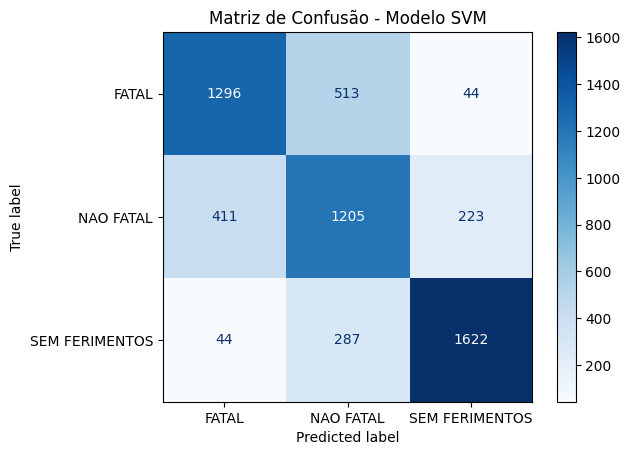

Traffic Accident Prediction in Brazil: Analysis of DETRAN 2020 Data
The Problem: Traffic accidents are one of the leading causes of death in Brazil, representing a serious public health and road safety issue. In 2020, Brazil recorded thousands of accidents, involving a wide variety of factors, from weather conditions to driver behavior. The complexity of these events requires a deeper analysis to identify patterns, predict scenarios, and most importantly, prevent future tragedies.
More than 20 dead in fiery bus-truck collision in Brazil
-

A tragic crash between a passenger bus and a truck in Minas Gerais, Brazil, left over 30 people dead. The truck driver reportedly fled the scene.
What We Propose: In this project, we aim to explore and analyze 2020 traffic accident data from DETRAN with the goal of developing predictive models capable of forecasting the severity of accidents. Through the analysis of factors such as vehicle conditions, driver behavior, and accident characteristics, we want to create solutions that can assist in decision-making to reduce the number of traffic victims.
Important: The predictions made by our model are based on historical data and statistics and should not be interpreted as a final diagnosis. Just like in medical diagnostics, predictions can suggest trends but do not replace expert analysis. This project aims to support public policies and prevention strategies, not to determine what will happen in a specific scenario.
Graphically:
-
Accident severity categories showing the data imbalance in favor of "Non-Fatal" cases.
Accident Severity Distribution

-
Not using a seat belt is associated with more severe accidents.
Relationship Between Seat Belt Use and Accident Severity

-
Driving under the influence, although less frequent, worsens accidents.
Impact of Drunk Driving on Accident Severity

Our Predictive Model:
- Exploratory Data Analysis (EDA): In-depth study of the data to identify patterns and correlate variables.
- Predictive Modeling: Use of machine learning techniques such as Random Forest, XGBoost, and others to predict accident severity.
- Risk Factors: Identification of the main factors that increase accident severity.
- Model Chosen: After testing different classifiers, we selected the Support Vector Machine (SVM) using the RBF kernel due to its consistent performance across classes.
Why SVM?
The SVM model showed balanced results between precision and recall for all classes, especially for "SEM FERIMENTOS", which is the majority class. It also demonstrated solid performance on minority classes like "FATAL".
Validation Results:
| Class | Precision | Recall | F1-score |
|---|---|---|---|
| FATAL | 0.74 | 0.71 | 0.72 |
| NAO FATAL | 0.62 | 0.63 | 0.62 |
| SEM FERIMENTOS | 0.84 | 0.85 | 0.84 |
| Overall Accuracy | 0.73 | ||
Test Results:
| Class | Precision | Recall | F1-score |
|---|---|---|---|
| FATAL | 0.74 | 0.70 | 0.72 |
| NAO FATAL | 0.60 | 0.66 | 0.63 |
| SEM FERIMENTOS | 0.86 | 0.83 | 0.84 |
| Overall Accuracy | 0.73 | ||
The confusion matrix below shows that most predictions are close to their correct categories, especially for the "SEM FERIMENTOS" class, which has high true positives. Misclassifications are concentrated between the "FATAL" and "NAO FATAL" classes, which are more challenging to distinguish due to their similar characteristics.
-
Accident severity categories showing the data imbalance in favor of "Non-Fatal" cases.
Confusion Matrix - SVM Mode

Conclusion
Through this project, we demonstrate how data science can be a powerful ally in traffic accident prevention. By analyzing and predicting accident scenarios, we can contribute to more effective public policies, raise awareness among the population, and ultimately save lives. The road to safer traffic begins with understanding and acting on information.
Latest News
-

Several injured after car drives into crowd in Stuttgart, Germany
A Mercedes G-Class SUV drove into a crowd in downtown Stuttgart, injuring at least eight people, three seriously. Police say there's no indication of a deliberate attack.
-

Chinese man kills 35 in intentional car attack after divorce dispute
A 62-year-old man rammed his car into a crowd in Zhuhai, China, killing 35 people and injuring 43, reportedly due to dissatisfaction with his divorce settlement.
-
More than 20 dead in fiery bus-truck collision in Brazil
A tragic crash between a passenger bus and a truck in Minas Gerais, Brazil, left over 30 people dead. The truck driver reportedly fled the scene.
-

Florida driver runs over pedestrian after stopping to let them cross
In Oakland Park, Florida, a driver appeared to stop for a pedestrian, only to intentionally accelerate and strike the person. The pedestrian broke a leg; the driver fled.
-

Senator John Fetterman's High-Speed Crash in Maryland
Senator John Fetterman and his wife, Gisele, were involved in a high-speed crash on Interstate 70 in Maryland. Body camera footage released by Maryland State Police shows the aftermath of the incident. Fetterman was found at fault for the accident, which resulted in minor injuries to all parties involved.